Service History
Subject: IDT NS-7000
1) J0405 Detection sensor error (Unloading side) Shuttle 1
2) J0505 Detecting sensor error (Unloading side) Shuttle 2
Handler Model: NS-7000
Controller: RC520
Date: 21 Jan 2010
Symptom
Problems face at IDT(M) as below:-
1) J0405 Detection sensor error (Unloading side) Shuttle 1.
2) J0505 Detecting sensor error (Unloading side) Shuttle 2.
This error happen when handler in initial start and shuttle started initialization check.
Action
1. Already done the sensor check, all sensor is green when on the shuttle through hole pocket and slot.
2. Put on NS-6000 change kit and NS-7000 change kit to verify and get same result.
3. Check the teaching alignment for P23 and P24 is good.
4. Finding the cable on connector of Remote I/O is loosen and re-tighten back all loosen cable.
5. Did not have the side sensor for 6k change kit.
Photo 1, 2, 3, 4 is the sensor on IDT(M) handler and connector for Remote I/O that having loosen cable
|
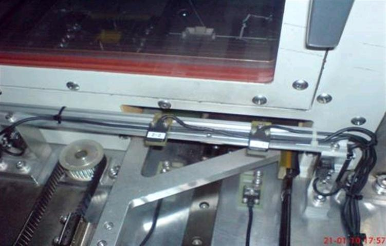 |
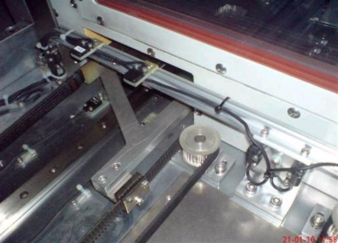 |
|
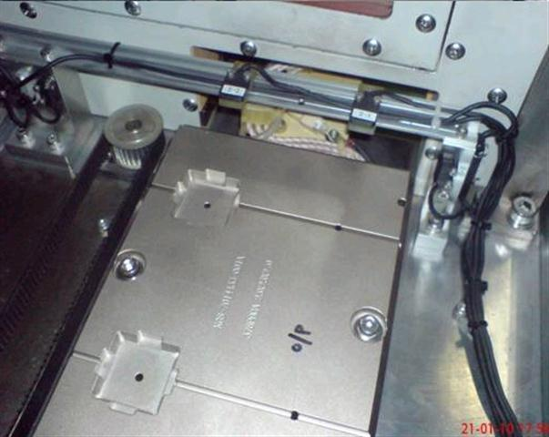 |
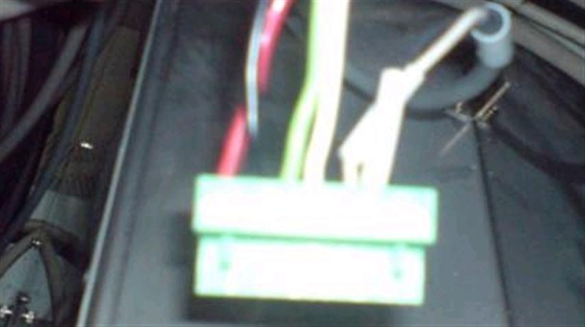 |
23 Jan 2010
Swapped:
1) 16CH Input I/O Module 48 SHUTTLE2 (located at rear-left of NS-7000), problem remains.
2) Shuttle Board SKP412-2 board , problem remains.
3) Remote I/O Board, problem remains.
Cause
27 Jan email shows that after Chamber upgrade, "Tunnel Block" on Output Shuttle hit top sensors' rail.
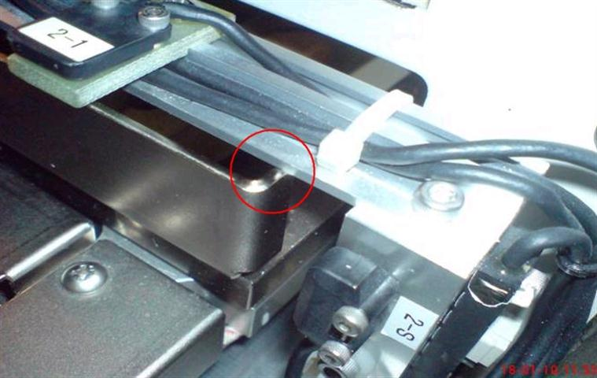
23 Jan email, photo shows "Tunnel Block" removed from Output Shuttles
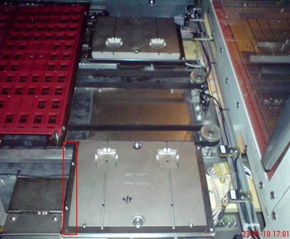
Found what is problem causing this. It is related with chamber upgrade, because we raise up the top sensor of the output shuttle and it cause the “detection sensor error”.
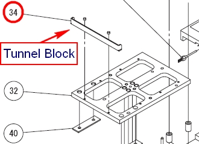
Then, when this “detection sensor error” happen we need to re-boot the handler, if not it cannot be reset the error.
Missing "Tunnel Block" on Output Shuttles caused timing issues resulted in Detection Sensor error at Output Shuttles or Initial Start Error.
The use of "Tunnel Block" is to block and unblock the Timing sensor for first time when output shuttle move out of chamber to provide timing sequence.
22 Sep 2011
Sensor detection problem solved. Found Space Block (metal cover which is part of chamber upgrade kit) have gap which caused timing sensor light to shine through, resulted in Output Shuttle sensor detection error.
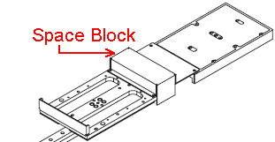
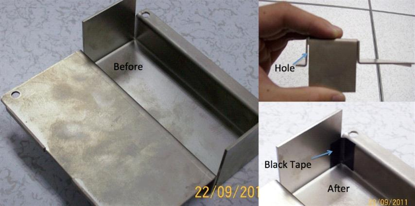
Remarks
Remote I/O board for NS7000 & NS8000 are compatible.
NS7000=>AI28-01-Y03
NS8000=>AI28-01-Y200
Difference between Y-03 and Y-200 is RoHS specification only.
Check points for Output Shuttle Sensor Detection Error:
- photoelectric switch(timing sensor)
- resit connector for timing sensor
- any uneven slide plate of output shuttle
- tunnel block missing on the output shuttle slide plate
- any hole on tunnel block
- Gate Sensor Board
- Input IO Module for Timing sensor
- Timing sensor positions( X direction and height)
- Use of retrofit kit, tick "Use Side Device Exist Sensor" in the Device Exist Sensor Window
1 Mar 2010 email
differences between IDT Malaysia NS-7000 S/N : 18781(No upgrade kit) and Singapore IDT transfer NS-7000 S/N :18724(with upgrade kit),
Singapore IDT transfer one NS-7000 S/N :18724 have Inside Plate only, other all the same.
|
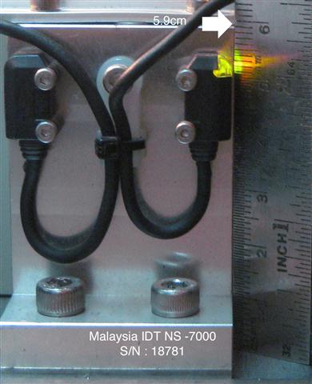 |
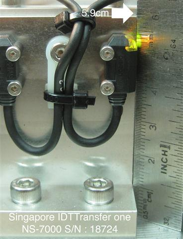 |
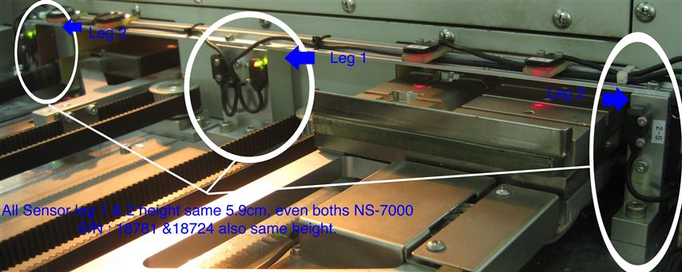
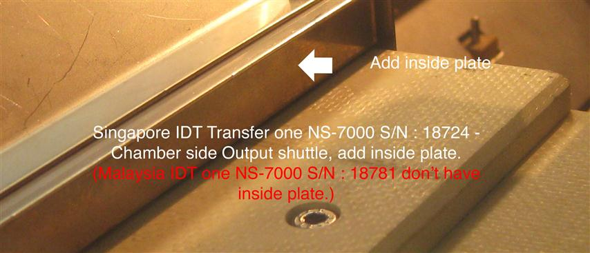
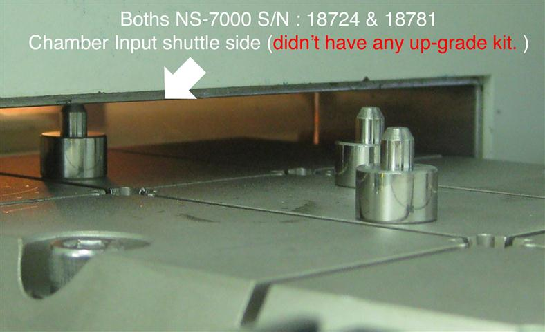
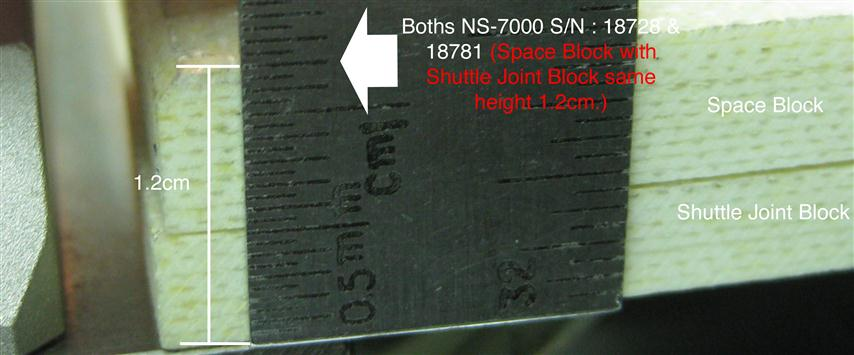